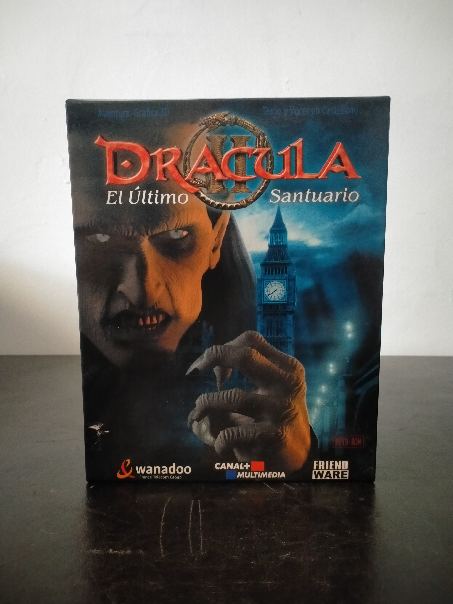

Ficha #000150
Drácula II: El último santuario
Drácula II: El Último Santuario es una aventura gráfica en primera persona publicada en 2000 y continuación directa de Drácula: Resurrección. La historia retoma a Jonathan Harker y Mina en Londres, en octubre de 1904, con el regreso de la amenaza del conde Drácula y el Anillo del Dragón como eje narrativo. Desarrollado por Wanadoo Edition, el juego emplea tecnología de exploración panorámica de 360 grados asociada al motor Phoenix VR, escenarios prerenderizados y personajes 3D con captura de movimiento, combinando investigación, puzles, inventario de objetos y secuencias de confrontación. Esta edición española Big Box distribuida por Friendware destaca por ofrecer textos y voces en castellano y por presentarse en dos CD-ROM, constituyendo una edición representativa de la aventura gráfica europea en CD-ROM de comienzos de los años 2000.
- Formato
- Big Box
- Plataforma
- Win95 Win98 WinMe
- Género
- Aventura gráfica Point and click Aventura en primera persona Terror gótico Puzzle
- Serie
- Todos Big Box
- Desarrollador
- Wanadoo Edition
- Distribuidor
- Friendware, Canal+ Multimedia
- EAN
- —
Contenido de la edición
- Caja exterior Big Box
- Estuche jewel case doble
- 2 CD-ROM
- Revista promocional Friendware n.º 6
- Folleto promocional Area66
- Tarjeta postal o de registro Friendware
Preservación
- Protección
- No determinado
- Formato recomendado
- BIN/CUE
- Jugable en virtualización
- Sí
Se recomienda realizar un volcado sectorial individual de los dos CD-ROM, preferiblemente en BIN/CUE, conservar hashes de verificación y documentar por separado todos los impresos de la edición. La protección concreta de la edición española Friendware no está suficientemente documentada; otras ediciones internacionales emplearon sistemas distintos, por lo que no conviene asignar uno sin comprobar los discos. La ejecución en máquina virtual con Windows 98 es viable manteniendo las imágenes de CD montadas y aplicando, si fuese necesario, ajustes de compatibilidad propios del software de la época.